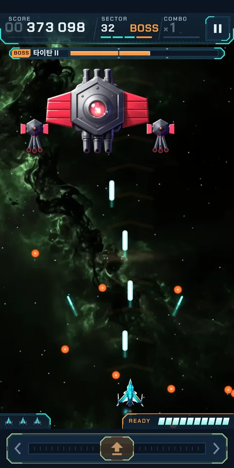
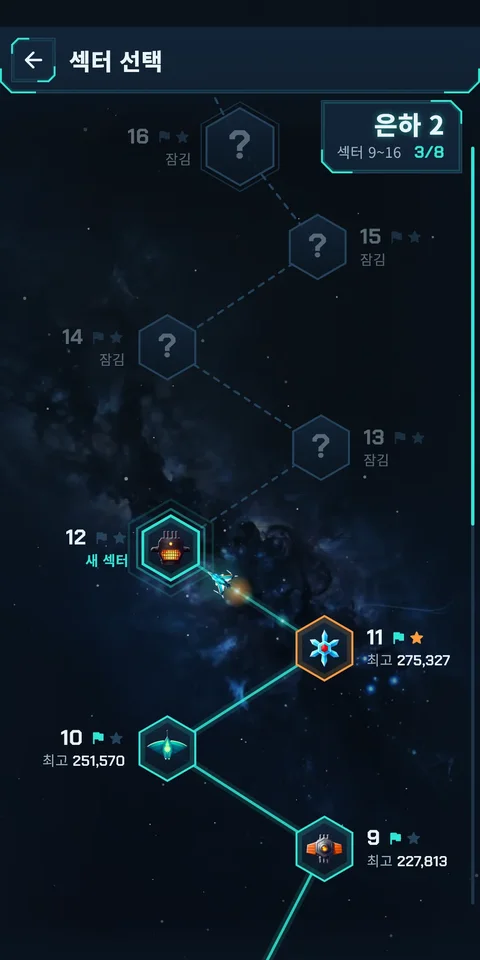
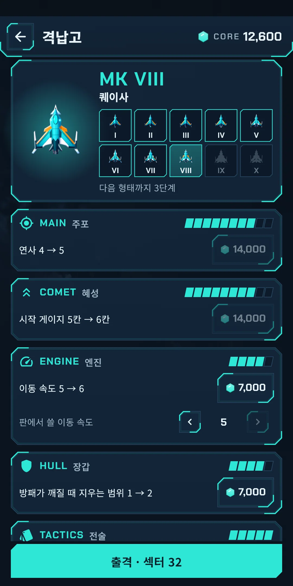
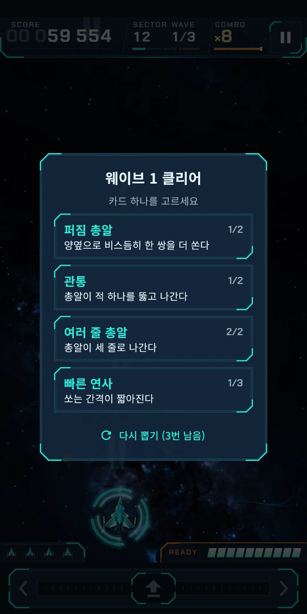
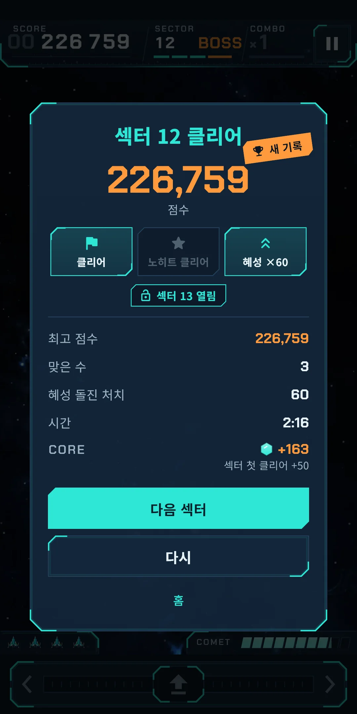

스크린샷







앱 정보
| 앱 이름 | Cometdive |
|---|---|
| 버전 | 1.0.0 |
| 개발 | Willee Project |
| 지원 플랫폼 | Android |
Cometdive(코멧다이브)는 세로 화면으로 한 손에 쥐고 하는 아케이드 우주 슈팅 게임입니다. 화면 어디서나 좌우로 끌면 배가 움직이고, 사격은 자동입니다. 적은 편대를 짓고 급강하해 옵니다. 급강하하는 적을 잡아 혜성 게이지를 채우면 배가 혜성이 되어 편대를 곧장 꿰뚫습니다(혜성 돌진).
- 회원가입도, 로그인도 없습니다. 처음 켜면 연습 섹터로 조작과 혜성 돌진을 익히는 튜토리얼부터 시작합니다. 건너뛰기로 언제든 마칠 수 있고, 설정에서 다시 볼 수 있습니다.
- 인터넷 없이도 게임은 됩니다. 인터넷은 광고와 이용 통계·오류 보고를 보낼 때만 씁니다.
- 언어는 기기 설정을 따릅니다. 한국어·영어·일본어·중국어(간체·번체)를 지원하고, 설정에서 직접 고를 수도 있습니다.
1. 규칙
- 섹터 하나는 웨이브 셋과 보스입니다. 웨이브의 적을 모두 잡으면 다음 웨이브로 가고, 셋째 웨이브 다음에 보스가 나옵니다. 보스를 쓰러뜨리면 섹터 클리어이고, 3분 안팎이 걸립니다.
- 배는 섹터마다 세 대로 시작합니다. 맞으면 배 한 대를 잃고 잠깐 무적이 됩니다. 배를 모두 잃으면 섹터 실패이고, 이어 하기는 없습니다. 방패는 맞아도 배를 잃지 않게 막아 줍니다(카드와 격납고의 장갑).
- 적을 잡으면 점수를 얻습니다. 급강하하는 중인 적은 점수가 두 배이고, 혜성 게이지도 더 많이 찹니다.
- 콤보: 한 적을 잡고 약 1.2초 안에 다음 적을 잡으면 콤보가 하나 오르고(최대 ×8), 처치 점수에 콤보 수가 곱해집니다. 시간을 넘기면 ×1로 돌아갑니다.
- 웨이브를 마칠 때와 섹터를 클리어할 때 보너스 점수가 붙습니다. 혜성 돌진으로 처치한 적이 많을수록, 한 번도 맞지 않고 클리어(노히트 클리어)하면 보너스가 커집니다.
- 섹터를 클리어하면 다음 섹터가 열립니다(3장·6장).
- 판 중간 상태는 저장하지 않습니다. 홈으로 나가면 그 섹터는 처음부터 다시 합니다.
판 화면 보는 법
- 위 띠: 점수(여덟 자리), SECTOR와 WAVE, 콤보(COMBO)와 이어 가는 남은 시간 줄, 일시정지 단추가 있습니다. 보스가 나오면 보스 체력 틀이 뜨고, 보스가 들어오기 전에는 WARNING 띠가 깜빡입니다.
- 판 아래: 남은 배 수와 COMET 게이지(10칸)가 보이고, 게이지가 가득 차면 READY가 켜집니다.
- 판 맨 아래의 둥근 판이 아래 조작 띠입니다(2장).
2. 조작
- 끌기: 화면 어디서나 손가락을 댄 채 좌우로 끌면, 끈 만큼 배가 좌우로 움직입니다. 손가락을 배 위에 둘 필요가 없고, 배는 화면 아래에서 좌우로만 움직입니다.
- 아래 조작 띠: 판 아래의 띠에서 끌어도 같습니다. 손가락이 배를 가리지 않아 편합니다. 끌면 끄는 쪽 ‹ 또는 › 가 밝아지고, 게이지가 차면 띠 전체가 주황으로 빛납니다.
- 사격은 자동입니다. 적 아래로 가서 맞추면 됩니다.
- 일시정지: 위 띠의 일시정지 단추를 누릅니다. 뒤로 가기를 누르거나 앱을 내려도 일시정지가 됩니다. 일시정지 창에는 계속, 다시(이 섹터를 처음부터), 설정, 홈이 있습니다. 일시정지에서 설정을 바꾸면 그 판에 바로 적용됩니다.
- 끌기 감도는 정해져 있어 설정에 없습니다. 격납고의 엔진을 강화하면 이동 속도와 함께 오릅니다(7장).
3. 혜성 돌진
- 적을 잡으면 COMET 게이지가 찹니다. 편대에 서 있는 적은 조금, 급강하하는 적은 많이 채웁니다. 10칸이 가득 차면 READY가 켜지고 아래 조작 띠가 주황으로 빛납니다.
- 게이지가 찼을 때 둘 중 하나로 발동합니다.
- 위로 튕기기: 화면에서 손가락을 위로 빠르게 튕깁니다(↑ 위로 튕기면 혜성 돌진).
- 아래 조작 띠 누르기: 아래 띠 어디든 톡 눌렀다 뗍니다(아래 조작 띠를 눌러도 됩니다). 오래 누르거나 끌면 발동하지 않습니다.
- 배가 약 0.8초 동안 혜성이 되어 위로 솟구쳐, 길에 있는 적을 꿰뚫습니다. 게이지가 차면 돌진 길(꺾쇠)과 길 안의 적에 고리가 보입니다. 돌진하는 동안에도 좌우로 끌어 길을 조금 바꿀 수 있습니다.
- 돌진은 방패 고리를 두른 적도 부수고 보스에게도 피해를 줍니다. 다만 광선은 부수지 못합니다. 돌진하면 게이지를 쓰므로 다시 채워야 합니다.
- 혜성 돌진으로 처치한 수는 결과 화면과 기록에 남고, 섹터 클리어 보너스에 듭니다.
- 판 중에는 처음 몇 번의 돌진까지 방법을 알려 주는 글이 뜹니다.
4. 카드
- 웨이브를 마칠 때마다 카드 셋 가운데 하나를 고릅니다(웨이브 N 클리어 · 카드 하나를 고르세요). 고른 카드는 그 섹터 안에서만 쌓이고, 다음 섹터는 처음부터 다시 시작합니다.
- 같은 카드를 다시 고르면 2단계로 오릅니다. 단계가 한 번뿐인 카드도 있습니다.
- 처음에는 열 가지 카드로 시작하고, 나머지는 은하가 오르면서 후보에 하나씩 들어옵니다(표의 '은하').
| 카드 | 효과 |
|---|---|
| 여러 줄 총알 | 총알이 두 줄로 나간다 → 세 줄 |
| 퍼짐 총알 | 양옆으로 비스듬히 한 쌍을 더 쏜다 → 두 쌍 |
| 빠른 연사 | 쏘는 간격이 짧아진다(최대 3번) |
| 관통 | 총알이 적 하나를 뚫고 나간다 → 둘 |
| 추적 미사일 | 가까운 적을 쫓는 미사일을 쏜다 → 더 자주 |
| 보조 드론 | 드론 하나가 옆에서 함께 쏜다 → 둘 |
| 방패 | 방패 하나: 맞아도 배를 잃지 않는다 → 하나 더(고르면 모두 채운다) |
| 혜성 충전 | 혜성 게이지가 더 빨리 찬다 → 훨씬 빨리 |
| 급강하 예고 | 급강하하기 전에 적이 주황으로 깜빡인다 |
| 배 한 대 더 | 남은 배가 한 대 늘어난다 |
| 측면 포(은하 2부터) | 날개 끝에서 비스듬히 쏜다 → 더 자주 |
| 무거운 탄(은하 3) | 네 번째 사격마다 곧은 총알의 피해가 2배 → 세 번째마다 |
| 콤보 유지(은하 4) | 콤보가 더 오래 이어져 점수가 더 오른다 → 훨씬 오래 |
| 급강하 사냥(은하 5) | 급강하하는 적에게 주는 피해가 2배 → 급강하 처치로 혜성 게이지도 더 빨리 찬다 |
| 연쇄 전류(은하 6) | 적을 잡으면 가까운 적 하나에게 번개가 튄다 → 둘 |
| 혜성 폭발(은하 7) | 혜성 돌진이 위쪽에서 충격파를 낸다 → 돌아온 자리에서도 충격파를 내어 적 총알을 지운다 |
| 펄스 레이저(은하 8) | 일정 간격으로 위로 뚫는 레이저를 쏜다 → 더 자주 |
| 혜성 꼬리(은하 9) | 혜성 돌진 길에 불씨가 남아 적을 태운다 → 더 오래 남는다 |
- 격납고의 전술 갈래를 올리면 카드를 더 잘 쓸 수 있습니다. 웨이브 1 전에 카드 하나를 먼저 고르고(출격 전에 카드 하나를 고르세요), 섹터마다 다시 뽑기(1~3번, 카드 화면의 다시 뽑기 (N번 남음) 단추)를 하고, 나중에는 카드 넷 중에서 고릅니다(7장).
5. 적, 장애물, 보스
적과 장애물은 도감(8장)에서 다시 볼 수 있고, 처음 만나는 적이나 보스가 나오는 섹터는 시작할 때 소개 카드가 뜹니다.
적과 단계
적은 16 계열이 있고, 은하가 오르면 같은 계열의 높은 단계가 나옵니다. 단계가 높을수록 단단하고, 4단계는 공격이 하나 더 있습니다. 단계는 몸의 색과 흰 줄무늬로 구분합니다.
| 이름 | 하는 일 |
|---|---|
| 쿼크 | 편대의 기본. 편대에서 가끔 쏘고, 급강하하며 한 발 쏜다. |
| 별가오리 | 몸을 말며 날쌔게 내리꽂고, 내려오며 두 발 쏜다. |
| 오르트 | 단단해 잘 깨지지 않는다. 급강하하며 바늘을 부채로 뿌린다. |
| 클러스터 | 튼튼하고, 처음 맞으면 뉴트리노 둘을 내놓는다. |
| 감마 | 편대에서 바늘로 우리 배를 정확히 겨눈다. |
| 뉴트리노 | 클러스터와 보스가 내놓는다. 곧장 내려온다. |
| 태양돛 | 지그재그로 내려오며 꺾일 때마다 총알을 떨어뜨린다. |
| 플라스마 창 | 급강하하다 멈칫한 뒤 그 줄로 곧장 내리꽂는다. |
| 운석포 | 포신을 달군 뒤 크고 느린 포탄을 쏜다. |
| 라그랑주 | 흔들리며 가라앉고, 아래로 두 발을 나란히 떨어뜨린다. |
| 스윙바이 | 아래로 꺾이는 총알로 길을 좁힌다. |
| 월식 | 반쯤 내려와 쏘고 제자리로 돌아간다. |
| 스타더스트 | 가로질러 날며 기뢰를 남긴다. |
| 쿼드런트 | 돌며 내려오다 네 방향으로 흩뿌린다. |
| 태양 렌즈 | 예고선을 그은 뒤 광선을 내리꽂는다. |
| 오로라 | 아래 칸의 적을 보호막으로 감싼다. 먼저 노려라. |
정예
정예는 표시가 붙은 강화된 적입니다.
| 이름 | 하는 일 |
|---|---|
| 방패 고리 | 총알 두 발을 막는 고리를 둘렀다. 혜성 돌진은 막지 못한다. |
| 현상금 | 잡으면 큰 점수와 혜성 게이지를 얻는다. 한 번 급강하하면 달아난다. |
| 앞 장갑 | 편대에서는 총알을 튕겨 낸다. 급강하할 때 노려라. |
| 가속 | 더 빠르게, 더 자주 내리꽂는다. |
| 갈라짐 | 부수면 뉴트리노 둘이 튀어나온다. |
| 기뢰 꼬리 | 부서진 자리에 기뢰를 남긴다. |
장애물
| 이름 | 하는 일 |
|---|---|
| 소행성 | 천천히 떨어지는 바위. 부수면 작은 돌 둘로 갈라진다. |
| 폭발 결정 | 쏘아 터뜨리면 주변의 적도 함께 부서진다. |
| 잔해 | 부서지지 않는 잔해. 양쪽 총알을 모두 막는다. |
| 유성 비 | 경고 뒤 한 줄로 쏟아지는 작은 유성. |
| 중력 우물 | 우리 총알을 가운데로 휘게 하는 소용돌이. |
| 전기 기둥 | 흐르는 전류가 우리 총알을 막는다. 기둥을 부수면 꺼진다. |
적 총알
적 총알은 색만이 아니라 모양과 빛으로도 구별됩니다.
| 이름 | 하는 일 |
|---|---|
| 구슬 | 둥글고 느리다. 가장 흔한 적 총알. |
| 바늘 | 가늘고 빠르다. 부채로 퍼지기도 한다. |
| 포탄 | 크고 느리다. 비킬 자리를 좁힌다. |
| 꺾임탄 | 정해진 때 한 번 꺾인다. |
| 기뢰 | 멈춘 뒤 깜빡이다 고리로 터진다. 두 발이면 꺼진다. |
| 광선 | 예고선을 따라 내리꽂는 빛 기둥. 혜성 돌진으로도 부수지 못한다. |
위험한 공격의 예고
위험한 공격은 막 시작되는 순간부터 보이게 예고가 뜹니다. 예를 들어 광선은 예고선이 먼저 그어지고, 기뢰는 터지기 전에 깜빡이고, 유성 비는 경고 뒤에 쏟아지며, 총알 커튼은 틈이 빈 길로 보입니다. 보스가 들어올 때는 WARNING 띠가 뜹니다. 카드 급강하 예고를 고르면 급강하하기 전에 적이 주황으로 깜빡입니다.
보스
섹터의 마지막에는 보스가 나옵니다. 은하의 끝 섹터에서는 새 보스나 보스의 둘째 형태(이름 뒤에 II)가 나오고, 둘째 형태는 공격이 달라집니다.
| 보스 | 하는 일 | 둘째 형태(II) |
|---|---|---|
| 타이탄 | 포탑 둘로 겨눠 쏘고, 몸에서 고리와 나선을 뿜는다. | 포탑 덮개가 날아가 포신 셋이 드러난다. 자리를 옮기며 틈이 있는 총알 커튼을 내린다. |
| 네뷸라 | 날개포에서 바늘을 부채로 겨누고, 고리와 나선을 뿜는다. | 지느러미를 펼치고 돌진한 뒤, 날개포 둘이 엇갈리며 총알을 쓸어 뿌린다. |
| 프리즘 | 결정 조각 둘이 바늘 고리를 쏘고, 몸에서 나선을 뿜는다. | 결정 날이 갈라지고 조각이 둘레를 돌며, 광선 울타리를 세운다. |
| 항성로 | 배기포에서 포탄을 겨누고, 틈이 있는 총알 커튼을 내린다. | 쇠살대가 열려 불덩이가 새어 나온다. 돌진하고, 총알 커튼을 내리고, 기뢰를 뿌린다. |
| 행성계 | 구체 넷이 돌며 바깥으로 쏘고, 꺾임탄 부채가 우리 쪽으로 꺾인다. | 고리가 기울고 구체가 빨라진다. 기뢰를 뿌리고 꺾임탄을 쏜다. |
| 이온탑 | 광선 울타리를 세우고, 축전기 둘에서 부채꼴로 쓸어 쏜다. | 코일에 전기 고리가 감긴다. 차례로 켜지는 광선 울타리와 총알 커튼을 쓰고 스윙바이를 부른다. |
6. 모드
홈
위쪽에 이름과 홈 화면 연출이 있고, 오른쪽 위에 톱니바퀴 모양의 설정 단추가 있습니다. 그 아래에 큰 단추 둘과 작은 단추 셋이 있습니다.
| 단추 | 하는 일 |
|---|---|
| 섹터 N 시작 | 열린 섹터 가운데 가장 뒤 섹터를 바로 시작합니다. 그 섹터의 보스와 최고 점수가 함께 보입니다 |
| Daily | 오늘의 Daily를 시작합니다. 오늘의 보스, 끝까지 했다면 오늘 최고와 연속 일수가 보입니다 |
| 섹터 선택 | 열린 섹터 가운데 골라서 합니다(아래). 지금 은하 번호가 보입니다 |
| 격납고 | 코어로 배를 강화합니다(7장). 코어 잔액이 보이고, 살 수 있는 강화가 있으면 점이 찍힙니다 |
| 기록 | 기록과 도감을 엽니다(8장). 최고 섹터가 보입니다 |
Classic
- 섹터 여덟이 은하 하나입니다. 은하 1은 섹터 1~8이고, 섹터 9부터는 끝없이 이어집니다(은하 2, 은하 3, …).
- 섹터를 클리어하면 다음 섹터가 열립니다. 열린 섹터는 언제든 다시 할 수 있고, 최고 점수가 남습니다. 열리지 않은 섹터는 잠김이고 이전 섹터를 클리어하면 열립니다.
- 은하의 끝 섹터(여덟째)는 새 보스나 보스의 둘째 형태가 기다립니다. 클리어하면 은하 N 돌파가 뜹니다.
- 점수 배수는 은하가 오를 때마다 올라 ×3까지 갑니다. 기록의 중심은 도달한 최고 섹터입니다.
- 격납고에서 산 강화는 Classic에서 효과를 냅니다(7장).
섹터 선택
- 은하마다 한 쪽이고, 위아래로 끌어 넘깁니다(아래가 앞 은하, 위가 다음 은하). 처음에는 이어 할 섹터가 있는 은하가 보이고, 거기까지만 넘길 수 있습니다.
- 한 쪽은 지그재그로 오르는 항로이고, 섹터마다 육각 칸에 보스 그림이 있습니다(은하 끝은 큰 칸). 열리지 않은 섹터의 보스는 ? 로 가려집니다. 이어 할 섹터에는 내 배가 떠 있습니다.
- 칸 바깥의 이름표에는 섹터 번호, 메달 칸 둘(클리어, 노히트 클리어), 최고 점수(없으면 새 섹터, 잠겼으면 잠김)가 보입니다.
- 지도 위쪽 구석에 은하 이름·섹터 범위·클리어한 수가 있고, 오른쪽 가장자리의 가는 줄이 지금 은하의 위치입니다.
- 열린 칸을 누르면 그 섹터가 시작되고, 잠긴 칸을 누르면 여는 법을 알려 줍니다.
결과 화면
섹터가 끝나면 점수가 올라가며 결과가 나옵니다. 점수, 최고 점수(새로 넘으면 새 기록), 맞은 수, 혜성 돌진 처치, 시간, 메달 칸 셋(클리어, 노히트 클리어, 혜성 ×N)이 보입니다. 클리어하면 섹터 N 열림이 보이고, 코어를 얻은 만큼 코어가 표시됩니다(섹터 첫 클리어 +N, 은하 끝 섹터 첫 클리어 +N). 살 수 있는 강화가 있으면 강화 가능 N과 격납고 단추가 뜹니다. 단추는 다음 섹터(클리어했을 때), 다시, 홈입니다.
Daily
- 하루에 섹터 하나가 열립니다. 날짜는 기기의 날짜를 따르고, 자정에 새 날이 됩니다.
- 같은 날에는 같은 보스를 만난 사람끼리 같은 웨이브와 같은 카드 후보를 받습니다. 보스는 내가 지금까지 만난 보스 가운데서 날마다 돌아가며 정해지므로, 아직 못 만난 보스는 Daily에 나오지 않습니다(아무도 만나지 못했다면 첫 보스 타이탄입니다). 보스의 둘째 형태는 Daily에 나오지 않습니다. 그날의 보스는 처음 볼 때 정해져 그날 안에는 바뀌지 않고, 새로 만난 보스는 다음 날부터 차례에 듭니다.
- Daily는 격납고 강화 없이 모두 같은 배로 겨룹니다. 시작 카드에 STANDARD가 표시됩니다.
- 하루에 여러 번 할 수 있고, 그날 최고 점수가 남습니다.
- 끝까지 한 날(클리어든 실패든)이 연속으로 이어지고, 하루를 거르면 끊깁니다. 연속은 기록 화면과 홈의 Daily 단추, 결과 화면에 보입니다.
- Daily도 코어를 줍니다. 점수에 따른 코어와, 그날 첫 완주의 보너스(오늘 첫 완주 +N)가 있습니다.
7. 격납고
판에서 모은 코어로 배를 강화하는 곳입니다. 홈의 격납고나 결과 화면의 격납고 단추로 엽니다. 이 화면에는 배너가 없습니다.
코어를 얻는 법
- Classic과 Daily 모두, 판이 끝날 때마다 점수 ÷ 2,000(소수 내림)만큼 코어를 얻습니다. 클리어하지 못해도 얻습니다.
- 섹터를 처음 클리어하면 50, 은하 끝 섹터를 처음 클리어하면 200을 더 얻습니다. Daily는 그날 첫 완주에 50을 더 얻습니다.
- 코어는 판에서만 얻고 앱 안에서 살 수 없습니다.
강화
- 갈래는 다섯, 단계는 모두 35입니다. 위 띠에 코어 잔액, 배 판에 지금 형태, 그 아래에 갈래 다섯 줄(단계 칸, '지금 → 다음' 효과, 값 단추), 맨 아래에 출격 · 섹터 N이 있습니다.
- 값 단추를 한 번 누르면 2초 동안 확인 N으로 바뀌고, 다시 누르면 삽니다. 코어가 모자라면 단추가 흐리고 살 수 없습니다. 되팔기는 없습니다.
- 효과는 '연사 1 → 2'처럼 단순한 수로 보입니다. 처음 오면 안내 쪽지가 뜹니다.
| 갈래 | 단계 | 오르는 것 |
|---|---|---|
| 주포 | 10 | 연사, 총알 굵기, 총알 피해 |
| 혜성 | 10 | 시작 게이지, 돌진 폭, 돌진의 보스 피해 |
| 엔진 | 5 | 이동 속도 |
| 장갑 | 5 | 시작 방패, 보스 전에 빈 방패 하나 채움, 방패가 깨질 때 주변 적 총알 지움(범위도 넓어짐) |
| 전술 | 5 | 웨이브 1 전에 카드 하나 고르기, 섹터마다 다시 뽑기(1~3번), 카드 넷 중 고르기 |
- 엔진 줄의 판에서 쓸 이동 속도 ‹ › 로, 산 단계 가운데 판에서 쓸 이동 속도를 낮출 수 있습니다(배가 너무 빠르다고 느낄 때).
- 필요한 코어는 단계가 오를수록 커져, 모두 사려면 코어가 약 16만 4천 필요합니다.
- 격납고 강화는 Classic에서만 효과를 냅니다. Daily와 튜토리얼은 늘 같은 기본 배입니다.
배 형태
산 단계의 합이 늘면 배의 형태가 열 가지 가운데 하나로 바뀝니다. MK I(스파크), MK II(플레어), MK III(블레이즈), MK IV(인페르노), MK V(슈퍼노바), MK VI(펄서), MK VII(마그네타), MK VIII(퀘이사), MK IX(하이퍼노바), MK X(빅뱅)이고, 단계 합 3·7·12·19·23·26·29·32·35에서 바뀝니다. 형태는 모양이 바뀌는 것이고, 능력은 산 강화가 정합니다. 바뀌는 순간 연출이 나오고 다음 출격부터 MK N이 표시됩니다.
- 형태 줄에는 닿은 형태의 그림이 있고, 닿지 않은 형태는 실루엣입니다. 닿은 형태를 누르면 그 배를 볼 수 있습니다(지금 타는 배: MK N은 그대로입니다). 보기만 하고 타는 배는 바뀌지 않습니다.
- 다음 형태까지 남은 단계가 배 판에 보입니다(다음 형태까지 N단계, 마지막은 마지막 형태).
8. 기록과 도감
홈의 기록으로 엽니다.
- 최고 섹터(큰 숫자), 클리어한 섹터, 노히트 섹터, 최고 점수
- 은하 기록 칸: 누르면 모든 은하의 기록(은하마다 섹터 여덟의 보스와 최고 점수)을 봅니다.
- Daily: 현재 연속, 최장 연속, 오늘 최고, 역대 최고 점수, 플레이한 날
- 누적 기록: 플레이 시간, 완주한 판, 클리어한 판, 노히트 클리어, 처치한 적, 혜성 돌진 처치, 혜성 돌진, 최고 콤보, 처치한 보스, 잃은 배
- 도감: 적, 정예, 보스, 장애물, 카드, 적 총알 모두 109항목이 있습니다. 갈래마다 가장 최근에 발견한 그림과 발견 N/M, 진행 막대가 보이고, 갈래를 누르면 항목을 봅니다. 만난 적은 판에서 처음 만날 때 채워지고, 아직 만나지 못한 항목은 실루엣과 아직 발견하지 못했다로 보입니다. 배 형태 칸에는 격납고에서 닿은 형태가 채워집니다.
9. 설정
홈 오른쪽 위 설정(톱니바퀴)으로 엽니다. 판 중에는 일시정지 창에서도 엽니다. 묶음은 게임과 일반입니다.
게임
| 항목 | 내용 |
|---|---|
| 효과음 | 효과음을 켜고 끕니다 |
| 진동 | 맞을 때, 보스를 쓰러뜨릴 때, 혜성 돌진, 배 형태가 바뀔 때 진동을 켜고 끕니다 |
| 효과 줄이기 | 흔들림·깜빡임 같은 효과를 줄입니다 |
| 게임 음악 | 판의 배경 음악을 켜고 끕니다 |
| 메뉴 음악 | 홈과 메뉴에서 흐르는 음악을 켜고 끕니다 |
| 음악 크기 | 게임 음악과 메뉴 음악의 크기를 10% 단위로 고릅니다. 둘 가운데 하나라도 켜 있을 때 바꿀 수 있습니다 |
| 효과음 크기 | 효과음의 크기를 10% 단위로 고릅니다. 효과음이 켜 있을 때 바꿀 수 있습니다 |
| 화면 흔들림 | 맞을 때와 큰 폭발에 화면이 흔들립니다. 끌 수 있습니다 |
일반
| 항목 | 내용 |
|---|---|
| 언어 | 기기 언어를 따르거나(처음 값) 목록(English·日本語·한국어·简体中文·繁體中文)에서 직접 고릅니다 |
| 튜토리얼 다시 보기 | 튜토리얼을 다시 합니다. 기록에 남지 않습니다 |
| 개인정보 보호 옵션 | 광고 동의 내용을 확인하거나 바꿉니다. 동의가 필요한 지역(유럽 등)에서만 보입니다 |
| 앱 정보 | 버전, 이 설명서(게임 방법), 개인정보처리방침, 오픈소스 라이선스. 오픈소스 라이선스 목록에서 그림·음악을 만든 도구를 볼 수 있습니다 |
화면 색은 어두운 한 가지입니다.
10. 광고와 기록 보관
- 판을 하는 동안에는 광고도 결제도 없습니다. 판 화면, 카드 고르기, 일시정지, 튜토리얼, 결과 화면, 격납고에는 광고가 없습니다.
- 홈, 섹터 선택, 기록 화면의 맨 아래에 배너 광고 한 줄이 붙습니다.
- 전면 광고는 결과 화면에서 다음 행동(다음 섹터, 다시, 홈 등)을 누른 뒤에만 가끔 뜹니다. 게임을 한 시간(판을 진행한 시간만 셉니다. 메뉴와 일시정지는 뺍니다)이 20분이 된 뒤부터 뜰 수 있고, 그 뒤로는 마지막 광고 뒤 게임을 15분 더 해야 다시 뜹니다. 앱을 켠 뒤 첫 판의 결과, 진 직후의 다시, 튜토리얼 뒤에는 뜨지 않습니다.
- 동의가 필요한 지역(유럽 등)에서는 광고 동의 창이 뜹니다. 나중에 설정의 개인정보 보호 옵션에서 바꿀 수 있습니다.
- 앱 안에서 결제하는 것은 없습니다.
- 인터넷은 광고와 이용 통계·오류 보고에만 쓰입니다.
- 기록과 설정은 기기 안에 저장됩니다. 기기의 Google 백업(Android 자동 백업)이 켜져 있으면 백업에 함께 들어가, 기기를 바꿔도 이어서 할 수 있습니다. 앱을 지우면 기기의 기록도 지워집니다.
- 자세한 내용은 개인정보처리방침을 보십시오.